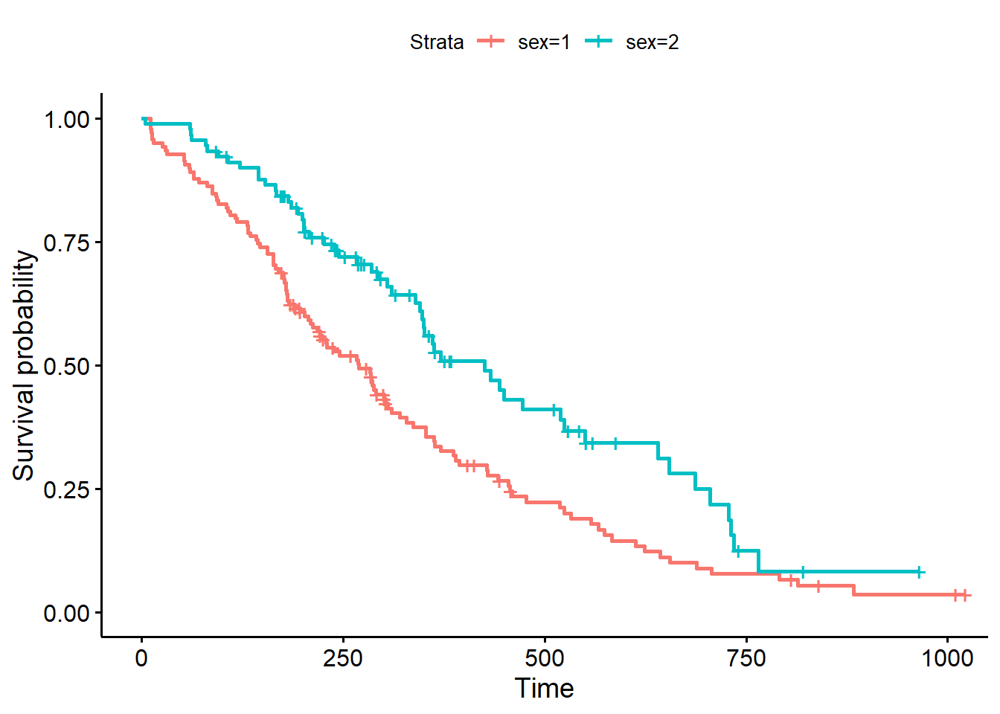

Chapter 3 Visualizing survival curves
Let’s first look at our little survival data (to see how this works) and then we will look at the actual data.
The following code creates the data:
simple=data.frame(matrix(c(7,8,10,3,2,3,1,1,0,1,1,0),ncol=2))
colnames(simple)=c("tenure","censored")
simple## tenure censored
## 1 7 1
## 2 8 1
## 3 10 0
## 4 3 1
## 5 2 1
## 6 3 0To calculate the survival probabilities, we will use the survfit command.
simple_km=survfit(Surv(tenure, censored==1)~1,data = simple)
summary(simple_km)## Call: survfit(formula = Surv(tenure, censored == 1) ~ 1, data = simple)
##
## time n.risk n.event survival std.err lower 95% CI upper 95% CI
## 2 6 1 0.833 0.152 0.5827 1
## 3 5 1 0.667 0.192 0.3786 1
## 7 3 1 0.444 0.222 0.1668 1
## 8 2 1 0.222 0.192 0.0407 1Now let’s plot this survival curve.
ggsurvplot(simple_km) Ok, so now let’s get to the real data:
Ok, so now let’s get to the real data:
lung_simple=survfit(Surv(time, status==2)~1,data = lung)
ggsurvplot(lung_simple)
We can also do a stratified survival curve. To do a stratified analysis, the variables must be categorical!! This is because you are creating a curve for each level of this variable. Let’s take a look at the different survival curves for sex (remember 1 is male and 2 is female).
lung_sex=survfit(Surv(time, status==2)~sex,data = lung)
ggsurvplot(lung_sex)
You can test if there is a significant difference in the survival curves by:
survdiff(Surv(time, status==2)~sex, data=lung)## Call:
## survdiff(formula = Surv(time, status == 2) ~ sex, data = lung)
##
## N Observed Expected (O-E)^2/E (O-E)^2/V
## sex=1 138 112 91.6 4.55 10.3
## sex=2 90 53 73.4 5.68 10.3
##
## Chisq= 10.3 on 1 degrees of freedom, p= 0.001Some neat things to plot here:
ggsurvplot(lung_sex,conf.int = T,pval=T,risk.table = T,risk.table.col="sex", legend.labs=c("Male","Female"),risk.table.height = 0.4)